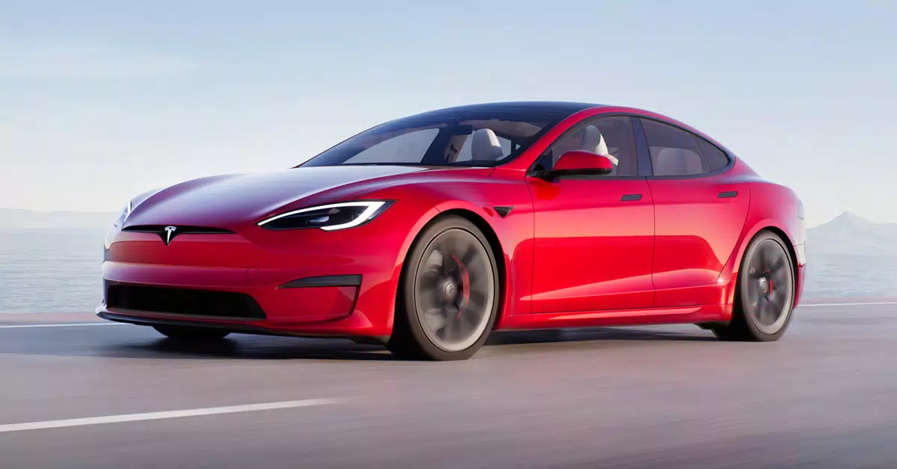

Felicitation tu est au derneier indice et sur le point du trouver la carte bancaire d'Elon Musk
Comme vous le savez, Elon Musk est le PDG de Tesla, une marque dans l'automobile électrique. Vous presque trouvez la carte bancair, elle se trouve dans sa voiture qui est garé sous un préhaut de la cour.
Les coordonées géographique de l'emplacement de l'indice sont 47°13'57.1"N 1°33'37.0"W